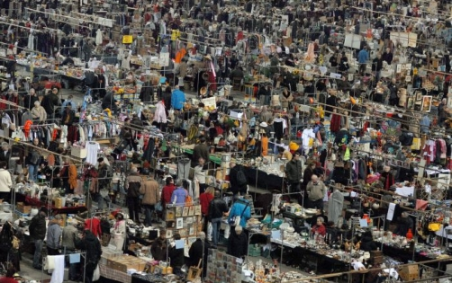

Snuffelmarkt


Info
zaterdag 28 en zondag 29 maart 2015
Aanvang: 09.00 uur
Verwachte eindtijd: 16.30 uur
Liefhebbers van tweedehands spullen, antiek en curiosa opgelet! Op zaterdag 28 en zondag 29 maart is er weer een snuffelmarkt in GelreDome. Van 09.00 tot 16.30 uur kun je je slag slaan bij een van de vele kraampjes.
Volwassenen betalen voor een toegangskaart slechts € 4,50. Kinderen tot en met 12 jaar hebben gratis toegang.